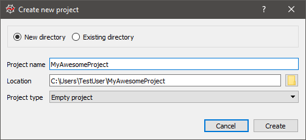

Spyder allows users to associate a given directory with a Project, which offers several main advantages:
Opening, closing or switching to a Project automatically saves and restores your Editor panes and open files to exactly how you left off. This allows you to easily switch between many different development tasks without having to manually re-create your session for each one.
Your project’s root directory is automatically added to the PYTHONPATH, so you can easily import and work with any modules and packages you create with zero setup.
PYTHONPATH
import
The project path is also used to automatically set your working directory, and can be used as an automatic preset for several modules, such as the Find in Files search location.
You can browse all your Project files from the Project Explorer, regardless of your current working directory or File Explorer location.
Projects are integrated with the git version control system, allowing you to commit files and open them or your repository in the gitk GUI right from within Spyder.
git
gitk
Note
Projects are completely optional and not imposed on users. All of Spyder’ functionality (session saving, File Explorer, working directory, etc) is available without creating a Project, just on a global rather than Project-specific basis.
To create a Project, click the New Project entry in the Projects menu, choose whether you’d like to associate a Project with an existing directory or make a new one, and enter the Project ‘s name and path:

Once a Project is opened, the Project Explorer pane is shown, presenting a tree view of the current Project ‘s files and directories. This pane allows you to perform all the same operations as a normal Spyder File Explorer.
Spyder has basic integration with the Git distributed version control system. You can commit or browse (in the gitk GUI) a file, directory or the entire repository via the commands in the context menu for the relevant object (right-click).
To use this functionality, the Project must be located in a git repository and the git and gitk commands must be on the system path. For Windows systems, the Git for Windows package provides a convenient installer and the option to place common git commands on the system path without creating conflicts with Windows system tools. The second option in the dialog below is generally a safe approach.
Editor
File Explorer